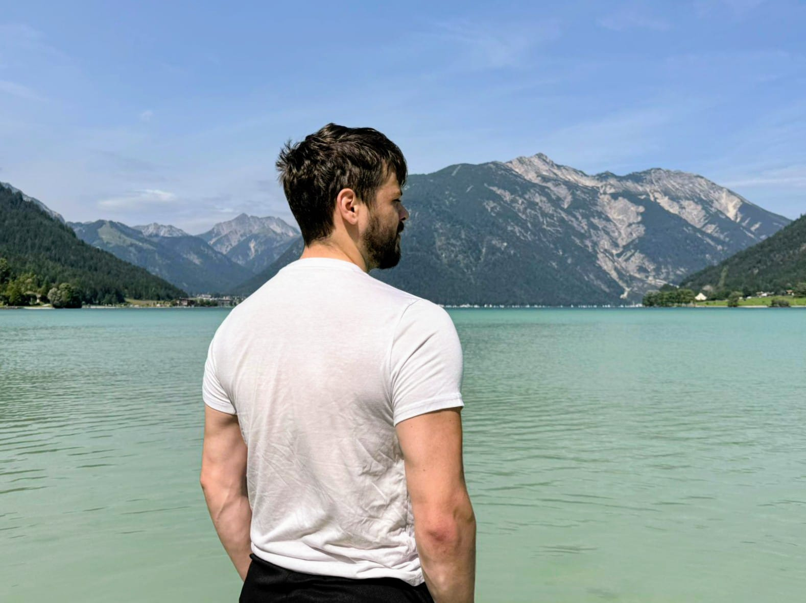

Double Degree PhD Student | TU Wien & Midsweden University
Advancing the frontiers of efficient AI implementation through model partitioning strategies, FPGA design, and high-level synthesis tools. Towards efficient AI implementation on the edge.
Explore My ResearchI'm Oscar Berg, a double degree PhD student from TU Wien (Austria) and Midsweden University (Sweden), specializing in efficient AI implementation. My research focuses on developing innovative strategies for AI model partitioning to optimize performance and resource utilization.
My passion spans across the entire AI landscape, from Large Language Models (LLMs) to computer vision (CV) applications. I'm particularly fascinated by the intersection of AI algorithms on the edge and hardware optimization, especially through novel partitioning strategies and digital designs on FPGA.
During my Master's thesis @Fraunhofer IMS, I created tinyHLS, an AI-High Level Synthesis tool that enables TensorFlow-to-Verilog translation, bridging the gap between machine learning frameworks and hardware description languages. This work is under development and maintenance by Fraunhofer IMS.

Developing innovative approaches to partition AI models for efficient deployment across distributed systems and edge devices, optimizing for latency, energy consumption, and computational resources.
Exploring efficient implementation techniques for LLMs, focusing on compression methods, quantization strategies, and novel architectures that maintain performance while reducing computational overhead.
Bridging AI algorithms and hardware through FPGA implementations and high-level synthesis. Creator of tinyHLS, an AI-HLS tool enabling TensorFlow-to-Verilog translation for efficient hardware deployment.
Investigating efficient computer vision algorithms and their hardware implementations, with emphasis on real-time processing capabilities and resource-constrained environments.
I'm always interested in discussing research collaborations. Feel free to reach out!